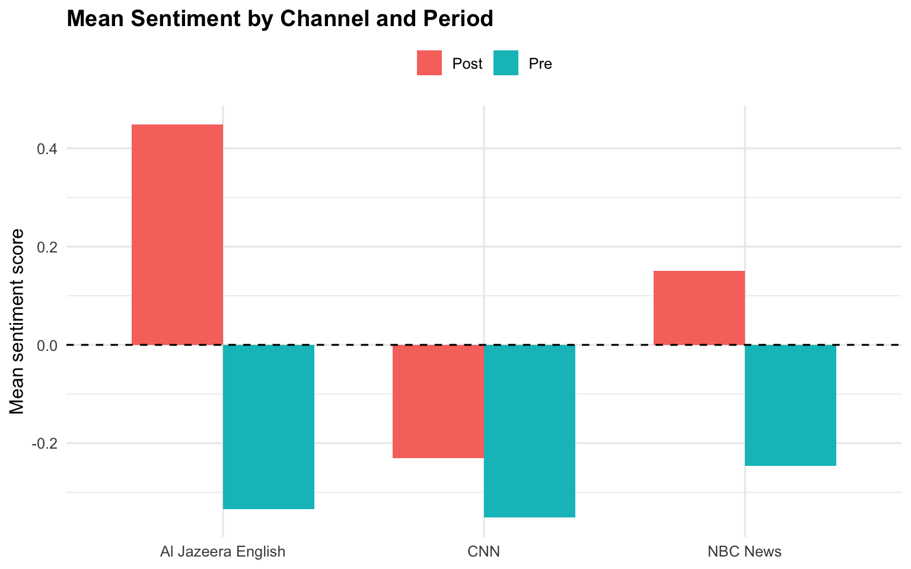

| Order | Returned | Reported | Duplicates | Distinct | Top channel |
|---|---|---|---|---|---|
| Relevance | 100 | 1,000,000 | 9 | 91 | Al Jazeera English (44) |
| View count | 100 | 1,000,000 | 0 | 100 | CNN (35) |
Assignment 7: YouTube Data Collection and Text Analysis
Data Collection
I collected YouTube videos and comments related to the 2026 U.S. midterm election before and after Election Day using the exact search term “US midterm election.” Searches were ordered once by relevance and once by view count.
The pre-election window covered September 1–October 27, 2026. Each ordering returned 100 rows although YouTube reported approximately 1,000,000 results. Only 8 video IDs overlapped. The relevance search contained 9 duplicate IDs and 91 distinct videos; the view-count search contained no duplicates and 100 distinct videos.
Pre-Election Search Summary
I repeated the same procedure for November 4–November 5, 2026. Both post-election rankings returned 100 distinct videos with no duplicates, while YouTube again reported approximately 1,000,000 results. The two rankings shared 37 videos.
Post-Election Search Summary
| Order | Returned | Reported | Duplicates | Distinct | Top channel |
|---|---|---|---|---|---|
| Relevance | 100 | 1,000,000 | 0 | 100 | Al Jazeera English / FRANCE 24 English (5 each) |
| View count | 100 | 1,000,000 | 0 | 100 | ABP NEWS (6) |
These differences show that YouTube search results are rankings rather than random samples.
I selected NBC News as a national network, CNN as a cable news channel, and Al Jazeera English as an international broadcaster. After retrieving channel details, I used each channel’s uploads list rather than repeated channel-specific searches. Reaching September 1 required approximately 68 units for NBC News, 51 for CNN, and 68 for Al Jazeera English.
The final title-filter pattern was:
midterm | midterms | congress | senate | house race | house seat | house majority | ballot | voter | vote | campaign
The vertical bar | indicates OR in the regular expression.
I reviewed 20 retained and 20 dropped titles. The first filter retained some foreign-election stories and missed some U.S. campaign stories, so I refined it and excluded obvious foreign-election terms. The channel route also identified relevant videos that the general search missed.
I selected three videos per channel per period and collected at most 300 comments per video.
Quota Plan and Actual Use
The assignment called for a quota plan before API collection. I did not preserve a separate pre-call table during the original collection session, so the following table is a reconstruction of the documented workflow, not a contemporaneous record.
Reconstructed Quota Plan
| API task | Planned pages | Estimated cost |
|---|---|---|
| Pre-election search: relevance | 2 | 2 search pages |
| Pre-election search: view count | 2 | 2 search pages |
| Post-election search: relevance | 2 | 2 search pages |
| Post-election search: view count | 2 | 2 search pages |
| Channel details | 1 minimum | 1+ data units |
| NBC News uploads to Sept. 1 | 68 | 68 data units |
| CNN uploads to Sept. 1 | 51 | 51 data units |
| Al Jazeera English uploads to Sept. 1 | 68 | 68 data units |
| Video statistics | 1 minimum | 1+ data units |
| Comments: 18 videos, ≤300 each | 54 minimum | 54+ data units |
Search and ordinary data requests use separate quota budgets. The reconstructed values are minimum estimates because comment replies and exploratory requests can require additional pages.
Actual Quota Use
| Quota bucket | Used | Limit | Remaining |
|---|---|---|---|
| Data | 433 | 10,000 | 9,567 |
| Search | 4 | 100 | 96 |
| Video uploads | 0 | 100 | 100 |
The local quota tracker recorded 433 data units and 4 search units used. I report the reconstructed plan and observed tracker separately because they are not equivalent records of every API request.
Comment Structure and Engagement
The final corpus contained 5,400 comments, with 900 comments per channel in each period. Overall reply share fell from approximately 13.5% pre-election to 8.7% post-election.
Like Concentration
| Period | Channel | Top 1% like share (%) |
|---|---|---|
| Pre | Al Jazeera English | 33.5 |
| Pre | CNN | 64.7 |
| Pre | NBC News | 27.3 |
| Post | Al Jazeera English | 30.6 |
| Post | CNN | 57.7 |
| Post | NBC News | 60.3 |
The most active 10% of authors produced 16.0%–26.2% of comments, showing additional concentration in participation.
KWIC and Phrase Analysis
I treated each comment as one document. Document variables included channel, video ID, reply status, like count, date, and election period. Punctuation and recognized symbols were removed during tokenization; URLs were explicitly removed for sentiment analysis, mentions were not separately removed, and emoji meaning was not assumed to be fully represented.
I reviewed 20 KWIC lines each for “democrat,” “republican,” “trump,” “vote,” and “ballot.”
KWIC Coding
| Keyword | Party naming | Candidate | Process | Grievance |
|---|---|---|---|---|
| democrat* | 2 | 4 | 6 | 8 |
| republican* | 5 | 1 | 5 | 9 |
| trump | 0 | 2 | 10 | 8 |
| vote* | 0 | 0 | 16 | 4 |
| ballot* | 0 | 0 | 16 | 4 |
Party terms frequently appeared in grievance contexts, whereas vote* and ballot* mainly referred to electoral processes.
Multiword Expressions
| Phrase | Count |
|---|---|
| house majority | 0 |
| senate race | 6 |
| early voting | 6 |
| mail in | 1 |
| election fraud | 3 |
| vote blue | 56 |
| democratic party | 20 |
The five required expressions were compounded along with vote blue and democratic party, which were identified from KWIC reading.
Keyness
| Comparison | Selected distinctive terms |
|---|---|
| CNN vs. other channels | harry, cnn, jeffries, trump, speaker, schumer |
| NBC News vs. other channels | steve, kornacki, latino, vote, polls, coverage |
| Al Jazeera English vs. other channels | congratulations, abdul, michigan, obama, kkk, burn |
| Pre-election vs. post-election | vote, polls, vote blue, voting, republican, seats |
| Post-election vs. pre-election | congratulations, war, civil, steve, happy, michigan, won, blame |
Pre-election comments emphasized voting, polling, and competition; post-election comments emphasized reactions, congratulations, winning, and blame. Channel differences likely reflect both news content and the audiences attracted to specific videos rather than channel ideology alone.
Sentiment Analysis
Sentiment was measured by channel and period using data_dictionary_LSD2015 and dfm_lookup().
Dictionary-Based Sentiment
| Period | Channel | Mean sentiment | Positive (%) | Negative (%) |
|---|---|---|---|---|
| Pre | Al Jazeera English | -0.334 | 22.1 | 35.9 |
| Pre | CNN | -0.351 | 23.7 | 36.0 |
| Pre | NBC News | -0.246 | 25.0 | 35.7 |
| Post | Al Jazeera English | 0.448 | 41.1 | 20.7 |
| Post | CNN | -0.231 | 30.8 | 36.8 |
| Post | NBC News | 0.151 | 34.9 | 25.3 |

The dictionary-based scores suggest that all three pre-election groups were negative on average. After the election, the dictionary scores became positive for Al Jazeera English and slightly positive for NBC News, while CNN remained negative.
I coded 40 randomly sampled comments as positive, negative, or neither. Dictionary and manual classifications agreed on 22 of 40 comments (55%). This relatively modest agreement indicates that the dictionary-based results should be interpreted cautiously rather than as direct measures of commenters’ emotional attitudes. Errors involved emojis, insults, slogans, sarcasm, and context-dependent language. For example, landslide may describe an electoral outcome rather than positive emotion, while rigged can indicate grievance that a general sentiment dictionary does not interpret reliably.
Comparison with Assignment 6
| Dimension | Biden-Xi tweets | Presidential documents | YouTube comments |
|---|---|---|---|
| Producer | Social media users | Government / presidential institutions | Users commenting under selected videos |
| Intended audience | Platform users / followers | Public and institutional audiences | Viewers of specific YouTube videos |
| Selection | Keyword and date retrieval | Document archive and keyword retrieval | Search ranking, channels, videos, API, moderation |
| Can it be collected again? | Limited by historical platform access | Relatively reproducible from archives | Less stable because rankings and comments change |
| Claims supported | Selected social-media discourse | Official government communication | Selected YouTube commenting audiences |
The three sources support different claims. Presidential documents describe official government communication; the tweets describe selected social-media discourse; and YouTube comments describe self-selected audiences participating beneath selected videos. They should not be generalized to U.S. voters or the public.
Data-Generating Process and Limitations
The corpus was shaped by the search term, ranking algorithm, channel and video choices, title filtering, the 300-comment cap, moderation, collection timing, and users’ decisions to comment or reply.
Repeated participation also matters because some authors contributed multiple comments. Although no exact duplicate comment IDs remained, repeated or near-repeated wording, including slogans or similar partisan expressions, may still amplify particular language in the corpus.
Therefore, keyness and sentiment describe the comments returned from these selected YouTube videos, not the electorate as a whole.
Data and Retention Note
Source. Data were collected through the YouTube Data API using an API key.
Permission and retention. No YouTube page or transcript scraping was used. The API key is stored outside the public project files and is not included in the manifests. Non-authorized comment data are retained for no more than 30 days.
Method. The exact term was “US midterm election.” The pre-election window was September 1–October 27, 2026; the post-election window was November 4–November 5, 2026. Searches used relevance and view-count ordering. Three channels were selected, titles were filtered for U.S. midterm content, and three videos per channel per period were collected with a 300-comment cap.
Known gaps. Ranking, video and channel selection, moderation, deleted or unavailable comments, API availability, and commenter self-selection limit what the collection represents.
The collection date was November 5, 2026, with a planned deletion date of December 5, 2026.
Collection Files
The files below contain collection logs, manifests, and aggregate results only. Raw comments, commenter names, commenter channel IDs, the 40-comment validation sample, and the API key are not posted.
AI Use Disclosure
Generative AI (OpenAI ChatGPT) was used to support R coding, debugging, interpretation of output, organization of the analysis, and refinement of report wording. All final analyses, interpretations, and submission content were reviewed against the actual R output and assignment requirements.
Comments Reported and Received
Show per-video collection details
The nine pre-election videos reported 39,115 comments, while 2,700 were received. The post-election videos reported 25,810, while 2,700 were received. The main reason is the 300-comment cap; deleted, moderated, held, or unavailable comments may also contribute.
All 18 videos had OK status; none were disabled, empty, or errors. Before joining, video and comment IDs were deduplicated, and video metadata were joined to comments as a many-to-one relationship. No duplicate comment IDs remained.